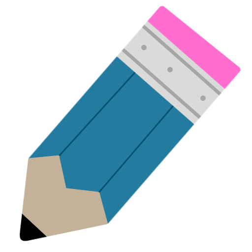

<ion-header [translucent]="true">
  <ion-toolbar>
    <ion-buttons slot="start">
      <ion-button class="favicon" routerLink="/home">
        
      </ion-button>
    </ion-buttons>
    <ion-buttons slot="end">
      <ion-menu-button></ion-menu-button>
    </ion-buttons>
    <ion-title>Puntómetro</ion-title>
  </ion-toolbar>
</ion-header>

<ion-content [fullscreen]="true">
  <ion-header collapse="condense">
    <ion-toolbar>
      <ion-title size="large">Lista de Materias</ion-title>
    </ion-toolbar>
  </ion-header>

  <ion-grid *ngIf="isLoggedIn; else loginMessage">
    <ion-row>
      <ion-col size="12" size-xs="12" size-sm="6" size-xl="4" *ngFor="let materia of materias$ | async">
        <app-materia-card [materia]="materia"></app-materia-card>
      </ion-col>
    </ion-row>
  </ion-grid>

  <ng-template #loginMessage>
    <ion-card>
      <ion-card-header>
        <ion-card-title>Por favor inicie sesión</ion-card-title>
      </ion-card-header>
      <ion-card-content>
        <p>Necesitas iniciar sesión para ver tus materias.</p>
      </ion-card-content>
    </ion-card>
  </ng-template>
</ion-content>
